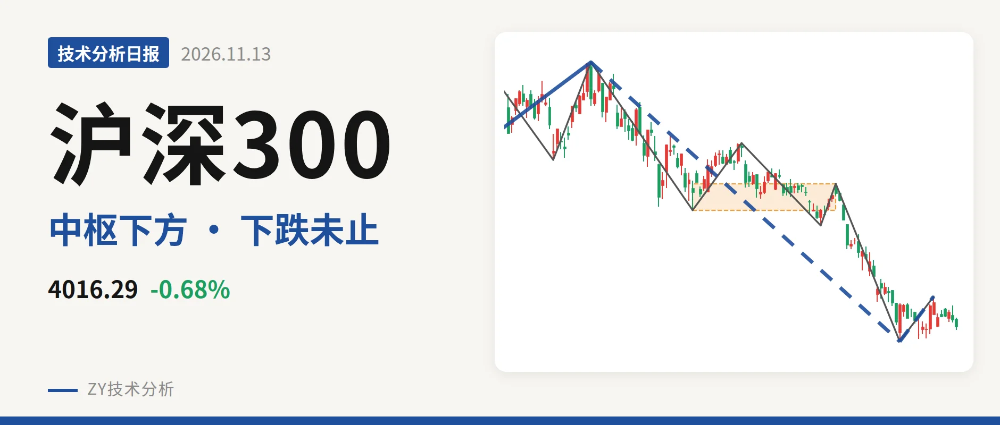
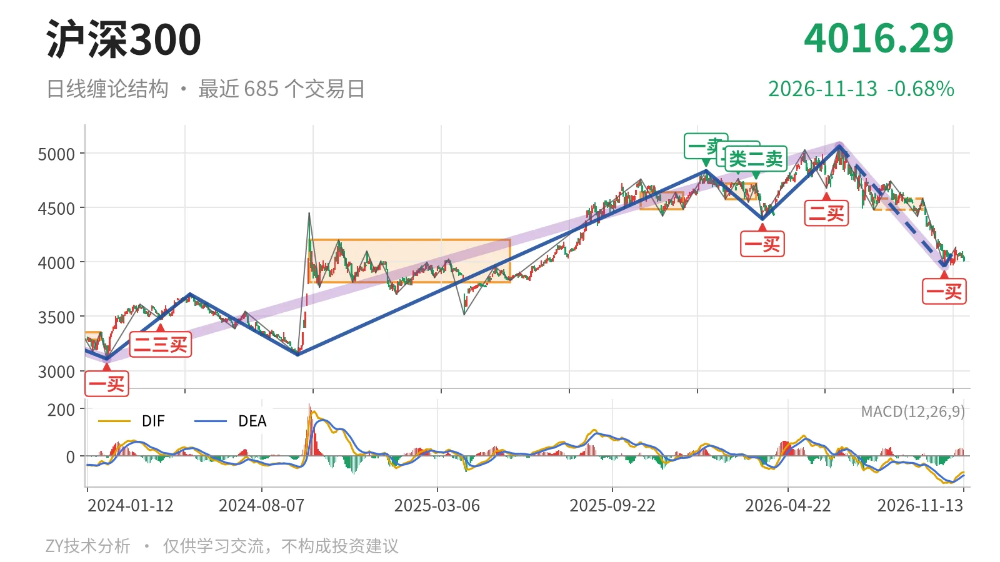
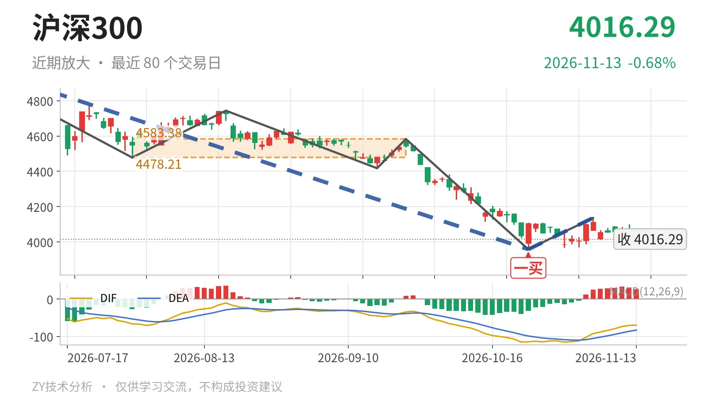

沪深300｜反弹未入中枢 4478点仍关键

最近日线中枢 4478.21—4583.38点，收盘位于中枢之下
一句话：日线下跌段延续，10月23日一买未破，反弹未入最近中枢。
📉 走势结构：上涨段内回落，日线下跌未完成
更大级别看，2024年2月2日至2026年6月23日上涨段从3108.35点涨至5064.27点，涨约63%，尚未走完；6月23日以来回落已见3958.14点，跌约21.8%，该回落还没结束。日线线段上，3月24日至6月23日上涨线段已经结束；6月23日至10月23日下跌线段仍在延续，内含5笔。10月23日至11月5日只形成一笔反弹，还不构成日线线段。11月6日至13日有6根K线尚未成笔，最高4100.05点、最低4004.50点，收于4016.29点，说明11月5日之后回落还在进行。

🧭 中枢与位置：最近中枢下方，大中枢内震荡
最新收盘4016.29点低于7月30日至9月22日日线笔中枢下沿4478.21点约10.3%。该中枢尚未完成，区间4478.21—4583.38点，但价格已向下离开。最近笔中枢由2月3日至3月17日的4578.21—4720.86点下移到7月30日至9月22日的4478.21—4583.38点，下沿降低100点，属于中枢下移。当前价格仍处在2024年10月8日至2025年5月30日中枢3812.32—4200.91点内部，接近中轴4006.61点，未破下沿3812.32点。最新日线MACD的DIF为-69.7、DEA为-83.1，仍在零轴下方，柱26.8，反弹尚未扭转零轴下结构。
🔖 买卖点：10月23日一买尚在，级别未放大
10月23日3958.14点的日线笔一买没有被跌破，但6月23日以来的日线下跌线段没结束，因此这个一买还只是下跌段内部反弹起点。上方1月13日一卖4836.95点、2月25日二卖4766.56点、3月17日类二卖4720.86点，一个比一个低。3月24日4394.29点虽出现过一笔一买，6月8日4677.57点出现过二买，但6月23日高点5064.27点后转跌。若后市跌破3958.14点，该一买将只对应更小级别。

⚡ 背驰：6月23日高点属于标准顶背驰
最关键的对比在6月8日至6月23日上涨笔与3月24日至5月14日上涨笔之间。前者从4677.57点升至5064.27点，创出新高；但红柱面积仅80，远低于后者964，DIF高点29.5也低于后者86.2，是典型“新高不新强”。这是6月23日之后回落的结构解释。当前下跌段内部并未出现同样标准的底背驰，因此6月23日以来的下跌还不易判断结束。
🎯 关键位置观察：4478、4201、3958三档
上方结构关键看4478点附近，这是最近中枢下沿。反抽若回不到4478点上方，结构上构成三卖压力，日线下跌段继续延续；重新站上4478点，则更可能是中枢扩展，而非单边下跌。下方3958点一线是10月23日一买低点，跌破则一买降级，并需看3812点附近。当前价格在4201点下方、3958点上方，属于大中枢内弱震荡。日线级别弱在反弹未能成线段、价格低于最近中枢下沿，但更大级别上涨段尚未破坏。
⚠️ 本文为基于公开行情数据的缠论技术结构记录，由程序自动计算并生成，仅供学习交流，不构成任何投资建议。市场有风险，投资需谨慎。